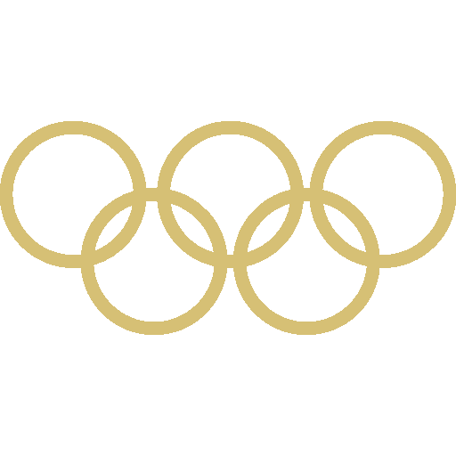
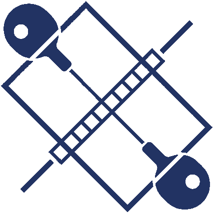
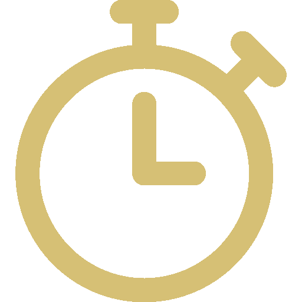

Accueil

Epreuve

Disciplines

Sportifs
Felix Le Brun
Biographie
Tableau des médailles
Rang
Nation
Médaille d'or
Médaille d'argent
Médaille de bronze
Total
1
États-Unis
40
44
42
126
2
Chine
40
27
24
91
3
Japon
20
12
13
45
4
Australie
18
19
16
53
5
France
16
26
22
64
6
Pays-Bas
15
7
12
34
7
Grande-Bretagne
14
22
29
65
8
Rép. de Corée
13
9
10
32
9
Italie
12
13
15
40
10
Allemagne
12
13
8
33
Les Grands Moments des JOs
Les Grands Hommes
Usain Bolt
Il court vite
Usain Bolt
Il court vite
Usain Bolt
Il court vite
Les Grandes Femmes
Les Grands Paralympiques
Les catégories sportives
Les sites des JOs
Les partenaires